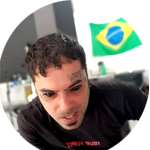

Socialmente Falando...
Quem sou eu?

Me chamo Raphael Abreu. Sou um jovem brasileiro de 37 anos que se encontra em uma etapa de vida produtiva, focada, resultante de muitas vivênvias, conquistas e estudos. Tattoador por mais de 9 anos, também tive oportunidade por me instruir e preparar para outras áreas de atuação profissional, algumas compatíveis com minha atual atividade, outras nem tanto. Após a conclusão do ensino médio tive a oportunidade de morar no exterior, isso promoveu uma série de novos conhecimentos, principalmente no domínio de novos idiomas.
Saiba mais sobre mim
- Que papo é esse de vida produtiva e focada?
- Você faz tattoo?
- Áreas de atuação profissional
- Você morou em qual lugar?
- Idiomas
- Isso aih no seu olho é tatuagem?
Redes Sociais
 /corey_tattoo_art - Me siga no Insta. Curta meus trabalhos
/corey_tattoo_art - Me siga no Insta. Curta meus trabalhos- /corey_geocaching - Me siga no meu perfil pessoal, conheça um pouco do que eu faço quando quero mudar de cena
 /coreydavess - Meu perfil mais antigo em rede social. Aqui estão muitos pensamentos e amizades. Ainda uso muito esta rede social.
/coreydavess - Meu perfil mais antigo em rede social. Aqui estão muitos pensamentos e amizades. Ainda uso muito esta rede social. /linkedIn - Meu perfil profissional na rede de gente séria
/linkedIn - Meu perfil profissional na rede de gente séria /CoreyTattooArt - Estou estreiando meu perfil nesta rede. Dá um pulo por lá e me segue
/CoreyTattooArt - Estou estreiando meu perfil nesta rede. Dá um pulo por lá e me segue